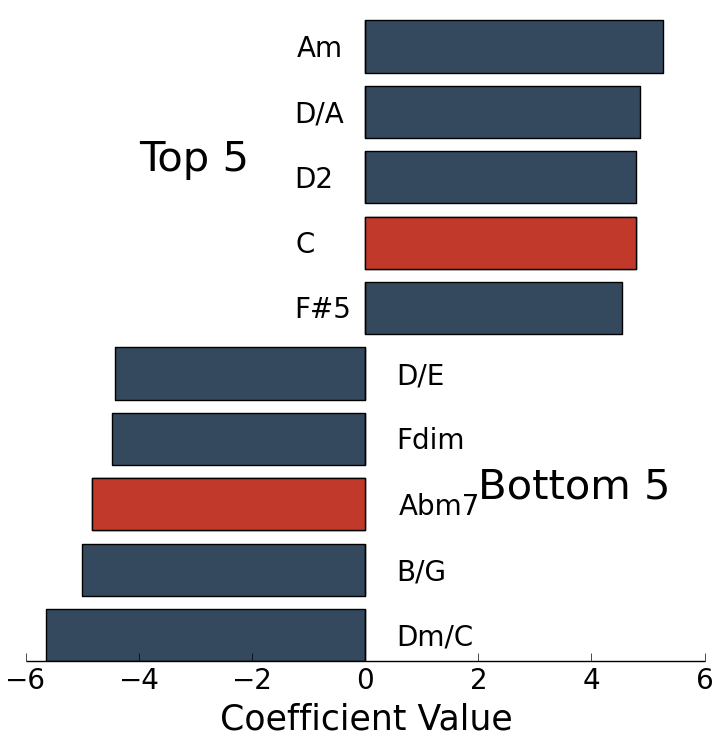

Problem:
Learning how to play instruments is hard.
You're motivated to play songs you enjoy listening to, but they're often out of your skill level

Matt Moocarme
Learn to play your favorite new songs
Learning how to play instruments is hard.
You're motivated to play songs you enjoy listening to, but they're often out of your skill level
The solution is
Jamify recommends songs based on listening preference AND skill level

2.4Gb subset of the Million Song Dataset
Latent semantic analysis to quickly perform cosine similarity via singular value decomposition


Music notation scraped from over 1 million webpages
Logistic Regression trains on ~36.0% labelled set into novice, intermediate, & advanced
10-fold cross-validated logistic regression to classify the music notations into difficulty levels
The main advantage is interpretable results
| Instrument | Accuracy |
|---|---|
| Guitar | 76.9% |
| Ukulele | 77.7% |
| Bass | 58.9% |
| Guitar Tabs | 52.5% |
| Drums | 45.4% |

Coefficients for "novice"
C predicted easy

Abm7 not predicted easy
D-A-Bm-G
Journey-Don't Stop Believin'
MGMT-Kids
A-Ha - Take On Me
Lady Gaga - Paparazzi
Jason Mraz - I'm Yours

Random = 1.7424e-6
Random = 1.7424e-6
Trained on 20,000 Guitar Tabs
| Model | 5-fold CV Accuracy | Test Accuracy |
|---|---|---|
| Logistic Regression - L1 penalty | 43.063 ± 10.614% | 47.618% |
| Logistic Regression - L2 penalty | 48.025 ± 5.789% | 52.512% |
| Nearest Neighbours | 49.788 ± 1.449% | 50.800% |
| Linear SVM | 49.940 ± 2.034% | 49.266% |
| RBF SVM | 57.712 ± 2.420% | 57.052% |
| Decision Trees | 57.871 ± 0.806% | 56.733% |
| Random Forest | 58.573 ± 1.457% | 58.807% |
| Adaboost | 59.331 ± 1.326% | 60.179% |
| Naive Bayes | 50.850 ± 2.180% | 51.659% |
| Quadratic Discriminant | 47.618 ± 9.749% | 50.479% |
Recommendation Using SVD with Rank 1
Marvin Sease - Show me what you got